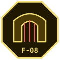
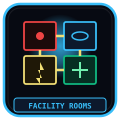
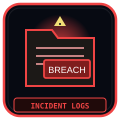

Facility 01 "The Hand of Change" is structured across eight subterranean sectors descending from the surface Palm Core down to the Taboo Gate, each overseen by a dedicated Echo-Core department lead.
NEUTRAL COMMAND
Directorate headquarters overseeing central power distribution, alerts, and personnel assignments.
MAW'S KEEP
Heavy physical containment sectors housing high-mass Sorrow Entities with kinetic dampeners.
EXTRACTION HALL
M.A.W. manufacturing foundries forging weapons and armor from entity agony resonances.
INSIGHT FORGE
Metaphysical laboratories conducting cognitive experiments, Han analysis, and psychic mapping.
BORDER WATCH
Subterranean perimeter fortress defending the facility's foundations against burrowing horrors.
DEEP VAULT
Cryogenic archive vaults sealing catastrophic T-05 entities and pre-Cataclysm records.
SHADOW CORPS
Void diving staging docks exploring the abyssal currents below the facility foundation.

GATE WATCH
The final threshold containing the cosmic taboo boundary leading outside Somnarak.

FACILITY ROOM TYPES
Architectural classification of containment cells, corridors, elevators, and airlocks.
VIEW ROOM SCHEMATICS →
INCIDENT REPORTS ARCHIVE
Chronological repository of all facility meltdowns, breaches, and mass casualties.
VIEW INCIDENT LOGS →AGENT ASSIGNMENT
Facility-wide placement by Resilience, Clarity, Composure, Resolve. Not a Floor 1 chapter.
VIEW ASSIGNMENT →FACILITY UPGRADES
Cells, gauges, welfare, expansion. Architects pour; Neutral Command signs.
VIEW UPGRADES →DAILY MISSIONS
Catalog of each floor’s daily work. Per-floor tables stay on the floor pages.
VIEW CATALOG →The Hand of Change (Facility 01) is an inverted brutalist ziggurat descending hundreds of meters beneath the urban bedrock. Divided into upper, middle, and lower strata, its 8 floors operate with strict compartmentalization to prevent cascaded containment breaches from reaching the surface districts.
| Tier / Layer | Included Floors | Sector Leads | Operational Focus | Emergency Lockdown Protocol |
|---|---|---|---|---|
| Upper Strata (Command & Keep) | Floor 1 (Neutral Core) Floor 2 (Maw's Keep) |
Director Majin Lead Dekan |
Facility administration, logistics, and high-mass containment. | Primary hydraulic blast gates isolate elevators to surface. |
| Middle Strata (Refining & Research) | Floor 3 (Extraction Hall) Floor 4 (Insight Forge) Floor 5 (Border Watch) |
Lead Zyrak Lead Ayshuk Lead Mellda |
Energy refining, M.A.W. weapon synthesis, and effluent perimeter watch. | Thermal vent purging and localized laser containment grids. |
| Lower Strata (Deep Vault & Threshold) | Floor 6 (Deep Vault) Floor 7 (Shadow Corps) Floor 8 (Gate Watch) |
Lead Marjuk Lead Ishall Lead Xyan |
Classified taboos, covert strike operations, and Cheongula gate defense. | Complete subterranean bulkhead seal; total isolation from grid. |